Clínica de longevidad · Turó ParkTres preguntas · un minuto
Descubre qué terapias pueden ayudarte a estar al 100 %.
Mueve la línea hasta tu número.

Clínica de longevidad · Turó ParkTres preguntas · un minuto
Mueve la línea hasta tu número.